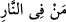
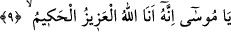

yorumlamıştır. Çünkü o ateşin yakınındaydı, içinde değildi. Mûsâ (a.s.) ateşe yönelince
Allah Teâlâ onu ve o nûrun içindeki melekleri mübârek kıldığını seslenmiştir.
Âriflerden birisi şöyle demiştir: Allah Teâlâ “
” ile mukaddes zâtını
kasdetmiştir. Mûsâ (a.s.)’a müşâhede bereketini veren O’dur. Hakîkatte Allah Teâlâ’nın
zâtı ve sıfatları herşeyden münezzeh olmakla birlikte âşıkın hâline uygun olarak ateş,
nur/ışık, ağaç, Tur ve diğer vasıflarla tecellî eder. Bir hadîste “Allah Teâlâ, zâtının
heybetini nasıl isterse öyle gösterir.” buyrulmuştur.
“Âlemlerin Rabbi olan Allah, eksikliklerden münezzehtir!” Bu cümle Allah Teâlâ
tarafından Mûsâ (a.s.)’a nidâ edilenlere dâhildir. Bu onun Allah’ın kelâmını işitmekle
teşbîh/Allah’ı başkalarına benzetme vehmine düşmemesi ve bu hususun büyüklüğü
konusunda onu hayrete sevk etmek içindir. Âlemlerin Rabbi olan Allah Teâlâ teşbihten
münezzehtir. Rivâyete göre Musa (a.s.) bu nidâyı işitince, “Seslenen kimdir?” dedi.
Tekrar nidâ geldi:
9. Ey Mûsâ! İyi bil ki, ben, mutlak galip ve hikmet sâhibi olan Allah’ım!
Yâni O güçlü, vehimlerin kavramaktan çok uzak olduğu şeyleri yapmaya kâdir, her
yaptığını hikmet ve tam bir tedbirle yapandır.
el-Es’îletü’l-mufhıme’de der ki: “Mûsâ (a.s.), “Gerçek şu ki, ben Allah’ım” sözünü
ağaçtan işitti. Bu da işitilenin, (kadîm değil) hâdis olduğuna delâlet eder. Çünkü
cihetlerden işitilmek hâdis olma alâmetidir.”
Bunun cevabı şöyledir: Biz Allah Teâlâ’nın zâtını cihetten ve mekândan tenzîh
ettiğimiz gibi Allah Teâlâ’nın kelâmını da cihet ve mekândan tenzîh ederiz. Bu yüzden
O’nun kelâmını seslerden ve harflerden de tenzîh ederiz. Mûsâ (a.s.)’ın Allah’ın
kelâmını işitmesi ancak ağaç tarafından meydana gelmiştir. Şu halde ağaç Allah
Teâlâ’ya değil, Mûsâ (a.s.)’ın işitmesine nisbet edilir. Tıpkı cennetin Allah’a değil,
cennet ehlinin görmesine nisbet edilmesi gibi. Çünkü bundan Allah’ın cennette olması
lâzım gelmez.
Eğer: “Mûsâ (a.s.) Allah’ın kelâmını ses, harf ve cihetsiz nasıl işitti?” diye soracak
olursan, şöyle cevap veririm: Eğer bu soru kelâmın nasıl olduğu hakkındaysa bu câiz
değildir. Çünkü Allah’ın zâtı ve sıfatlarının keyfiyetini/nasıl olduğunu sormak
muhâldir/imkânsızdır. Çünkü ‘Cisim, cevher ve ârâz olmaksızın O’nun zâtı nasıldır?
Kesb ve zarûret olmaksızın O’nun ilmi nasıldır? Salâbet olmaksızın O’nun kudreti
nasıldır? Şehvet ve arzu olmaksızın O’nun irâdesi nasıldır? Ses ve harf olmaksızın
O’nun konuşması nasıldır?’ denilmez.
Eğer Mûsâ (a.s.)’ın Allahın kelâmını nasıl işittiği sorulursa deriz ki: Allah Teâlâ,
Mûsâ (a.s.) için işittiği şeyin Allah’ın harf, ses ve cihet olmaksızın kadîm ve ezelî